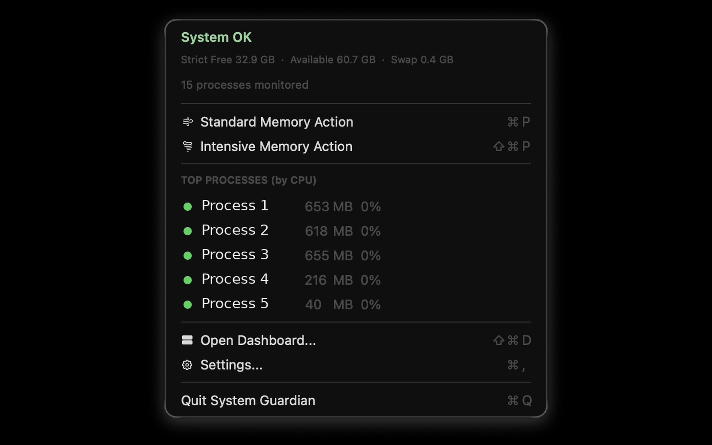
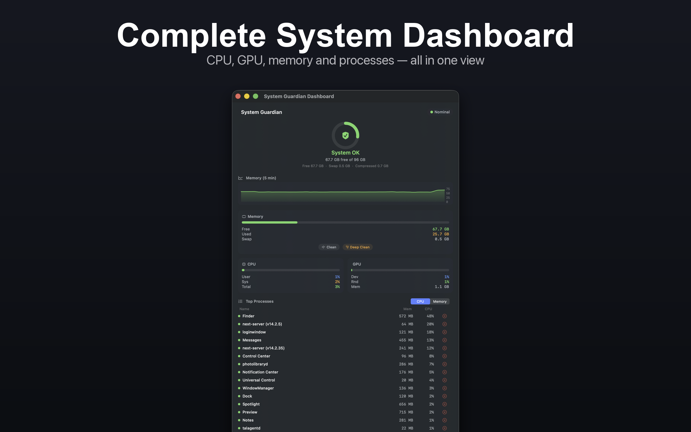
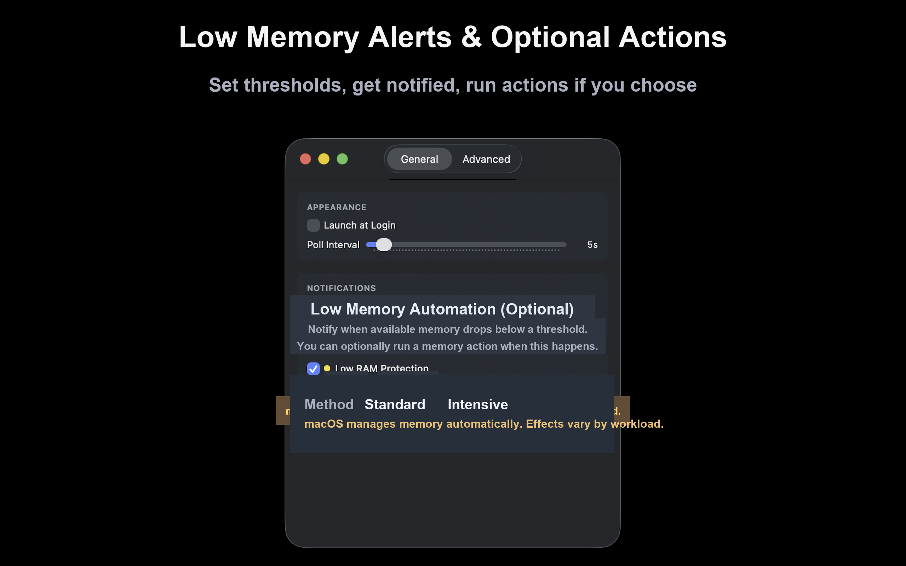

Screenshots
See it in action.
From the menu bar to the full dashboard, every detail is designed for clarity.




Real-time system monitoring from your menu bar. Focused, private, and fully local.
System Guardian is a menu bar system monitor for CPU, GPU, memory, swap, and processes, with local alerts and on-device diagnostics.
System Guardian is useful in resource-intensive workflows such as local AI model inference, development environments, and other compute-heavy applications.
System Guardian provides real-time visibility and configurable automation to support monitoring and user-directed actions under changing memory pressure during demanding tasks.
See top processes, track memory pressure, set thresholds, and optionally enable automation for memory actions. Run Standard or Intensive memory actions manually or on a schedule when needed. Advanced users can enable Auto Force Quit with explicit confirmation and allowlist controls.
Privacy-first by design: all processing stays on your device, with no analytics SDKs and no cloud telemetry.
Note: macOS manages memory automatically. Memory actions adjust cache behavior and memory pressure; effects vary by workload.
Real-time local telemetry with zero network requests. Built entirely with Apple frameworks.
Free, used, wired, compressed, and swap — all from the Mach kernel via host_statistics64. Updates every poll cycle.
Per-core delta sampling via host_processor_info. User, system, and idle breakdown with configurable spike alerts.
Device, renderer, and tiler utilization from IOKit's IOAccelerator. Works with Apple Silicon GPUs.
Manual and optional automatic memory actions with configurable thresholds and clear in-app status updates.
Low-memory, process, and CPU alerts with user-controlled thresholds, cooldowns, and notification preferences.
View top processes by CPU or memory usage and take manual action directly from the app when needed. Process Memory Limit Action supports Allowlist Only and Never-Kill List policy modes.
Advanced settings include a copyable diagnostics snapshot with the last automated action timestamps and reasons.
Note: macOS manages memory automatically. Memory actions may change cache behavior and memory pressure; effects vary by workload.
From the menu bar to the full dashboard, every detail is designed for clarity.
First-party system APIs for low-overhead monitoring and local analysis.
| Subsystem | API | Function |
|---|---|---|
| Memory | Mach kernel | host_statistics64(HOST_VM_INFO64) |
| CPU | Mach kernel | host_processor_info(PROCESSOR_CPU_LOAD_INFO) |
| GPU | IOKit | IOAccelerator → PerformanceStatistics |
| Swap | sysctl | vm.swapusage |
| Processes | System APIs | Process usage listing and manual control from the app UI |
No analytics. No telemetry. No network connections. Not even an update check.
The app makes absolutely no internet connections of any kind.
No telemetry, no crash reports sent externally, no usage data collected.
Built exclusively with Apple first-party frameworks. Zero external SDKs.
System metrics, settings, and logs stay entirely on your system.
Available on the App Store and as a direct download.
Questions? Reach out at info@khaeldur.com